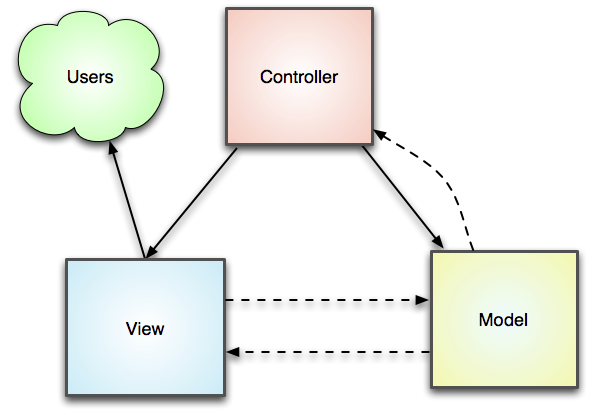

Zend Framework é um framework para aplicações Web orientado a objetos e de código aberto
para PHP 5. Zend Framework é geralmente chamado de "biblioteca de
componentes", porque tem muitos componentes fracamente acoplados que você pode usar de
forma mais ou menos independente. Mas o Zend Framework também fornece uma avançada
implementação Model-View-Controller (MVC) que pode ser usada para
estabelecer uma estrutura básica para seus aplicativos Zend Framework. Uma lista
completa dos componentes do Zend Framework, juntamente com uma breve descrição pode ser
encontrada na visão geral dos
componentes. Este Início Rápido irá apresentá-lo a alguns dos componentes do
Zend Framework mais comumente usados, incluindo Zend_Controller,
Zend_Layout, Zend_Config,
Zend_Db, Zend_Db_Table,
Zend_Registry juntamente com alguns assistentes de visualização.
Usando esses componentes, vamos construir um simples aplicativo de livro de visitas movido a banco de dados em poucos minutos. O código fonte completo para esta aplicação está disponível nos seguintes arquivos:
Então o que é exatamente este padrão MVC que todos estão falando, e por que você deveria se preocupar? MVC é muito mais do que apenas uma sigla de três letras (TLA), que você pode sacar sempre que quiser parecer esperto, tornou-se parte de uma norma nos projetos de aplicações Web modernas. E por uma boa razão. A maioria do código de aplicações Web está sob uma das três categorias seguintes: apresentação, lógica de negócios e acesso aos dados. Nos modelos do padrão MVC esta separação relaciona-se bem. O resultado final é que seu código de apresentação pode ser consolidado em uma parte de sua aplicação com sua lógica de negócio em outra parte e seu código de acesso aos dados também em outra. Muitos desenvolvedores descobriram que essa separação bem definida é indispensável para manter seus códigos organizados, especialmente quando mais do que um desenvolvedor está trabalhando em uma mesma aplicação.
![[Nota]](images/note.png) |
Mais Informações |
|---|---|
|
Vamos decompor o padrão e dar um olhada nas peças individuais: 
Claro que há mais a ser dito sobre esse padrão fundamental, mas isso deve dar-lhe conhecimento suficiente para entender a aplicação de livro de visitas que vamos construir. |